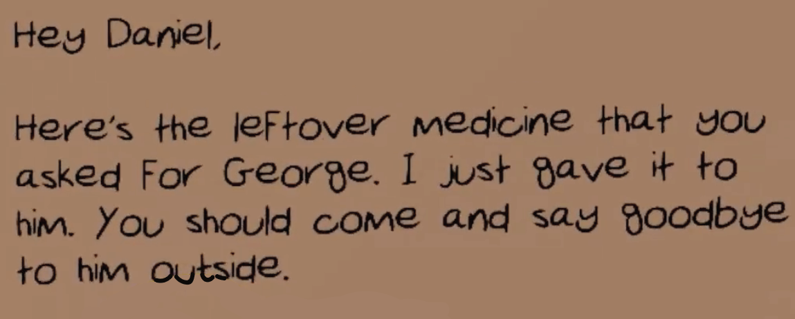

Storyline Development
The first step in designing an engaging experience was designing an engaging story. Deciding the right amount of information to give the player at each step was a challenge because we had to ensure that the information given did not make the plot entirely obvious but also was not so complex that the player would not be able to move forward. Testing the story helped us figure out the right amount of information to give to the user and as a result, allowed us to keep the player engaged at each step.
